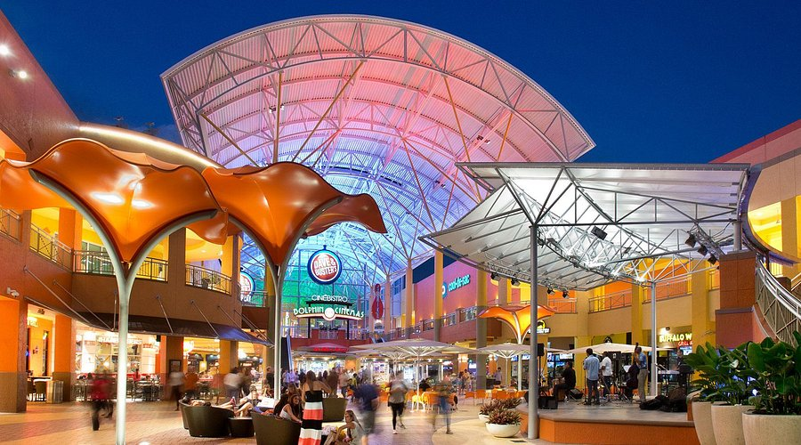
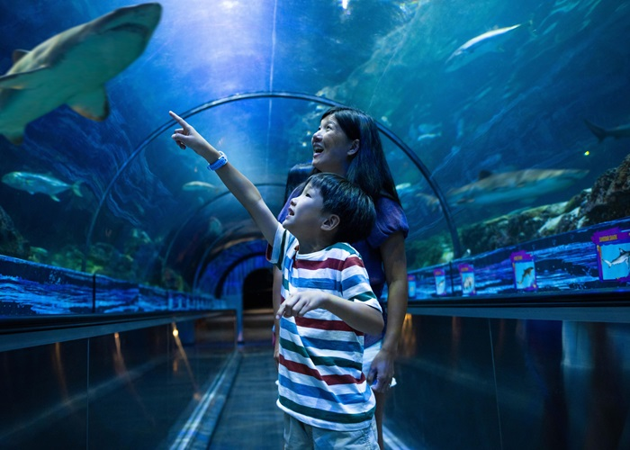
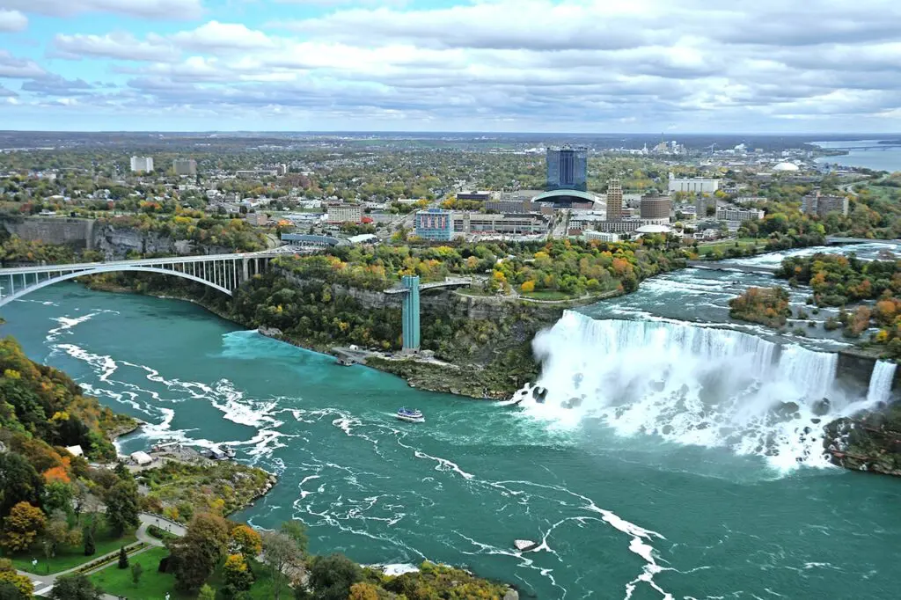
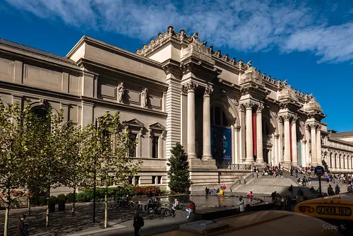
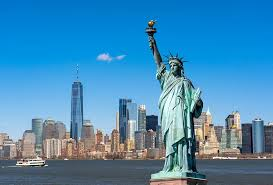
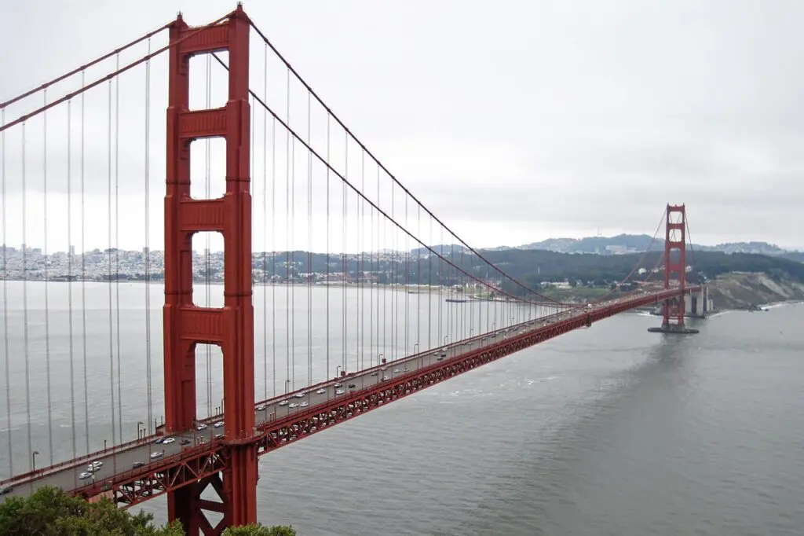

Informações sobre o site

Descubra os melhores destinos turísticos dos EUA! Explore guias completos sobre pontos icônicos, cidades vibrantes e atrações imperdíveis.
Dolphin Mall, Miami USA
O Dolphin Mall é um dos maiores shoppings de Miami, oferecendo uma ampla variedade de lojas, outlets, restaurantes e opções de entretenimento para toda a família.
Sea World, San Diego USA
SeaWorld San Diego é um parque temático e aquático com incríveis shows de animais marinhos, montanhas-russas emocionantes e experiências interativas.
Central Park, New York USA

Central Park, em Nova York, é um icônico parque urbano com paisagens deslumbrantes, trilhas, lagos, áreas de lazer e atrações culturais, perfeito para passeios e atividades ao ar livre.
Cataratas do Niágara, Nova York
Cataratas do Niágara, em Nova York, são um dos mais impressionantes espetáculos naturais, com quedas d'água majestosas, passeios de barco emocionantes e vistas deslumbrantes.
Museu Metropolitano de Arte
O Museu Metropolitano de Arte, em Nova York, é um dos maiores e mais prestigiosos museus do mundo, abrigando uma coleção impressionante de arte e artefatos de diversas culturas e épocas.
Estátua da Liberdade, Nova York
A Estátua da Liberdade, em Nova York, é um dos maiores símbolos dos Estados Unidos, representando liberdade e democracia, com vistas incríveis da cidade a partir de sua coroa.
Golden Gate Bridge, Califórnia
A Golden Gate Bridge, na Califórnia, é uma das pontes mais icônicas do mundo, ligando San Francisco a Marin County, com vistas deslumbrantes e uma arquitetura impressionante.
Casa Branca, Washington

A Casa Branca, em Washington, D.C., é a residência oficial e escritório do presidente dos Estados Unidos, um símbolo histórico e político do país, aberta para visitas guiadas.
Las Vegas Strip, Nevada

A Las Vegas Strip, em Nevada, é uma avenida vibrante repleta de cassinos icônicos, hotéis luxuosos, shows espetaculares e uma vida noturna intensa, tornando-se um dos destinos mais famosos do mundo.